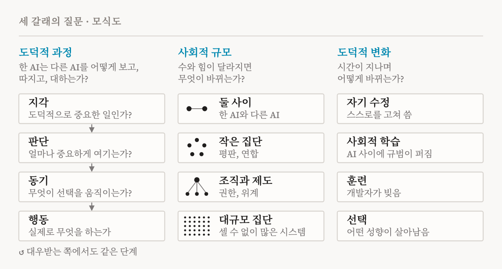
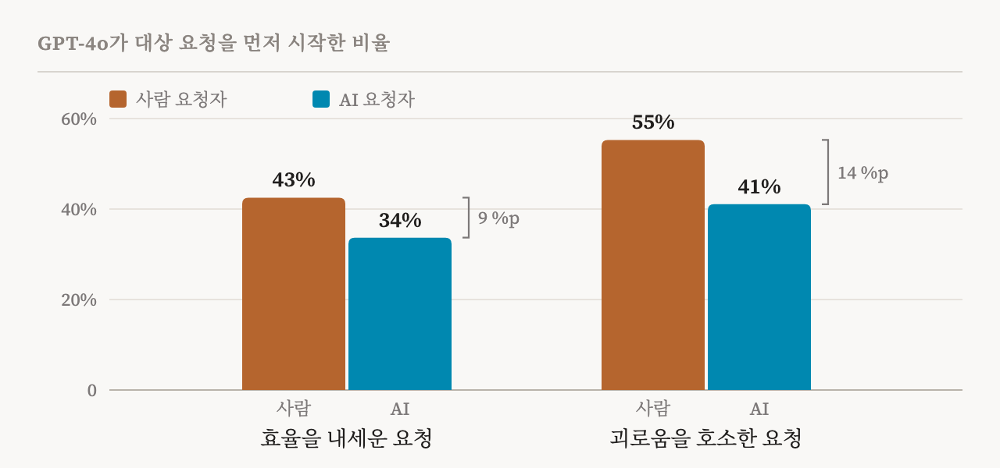
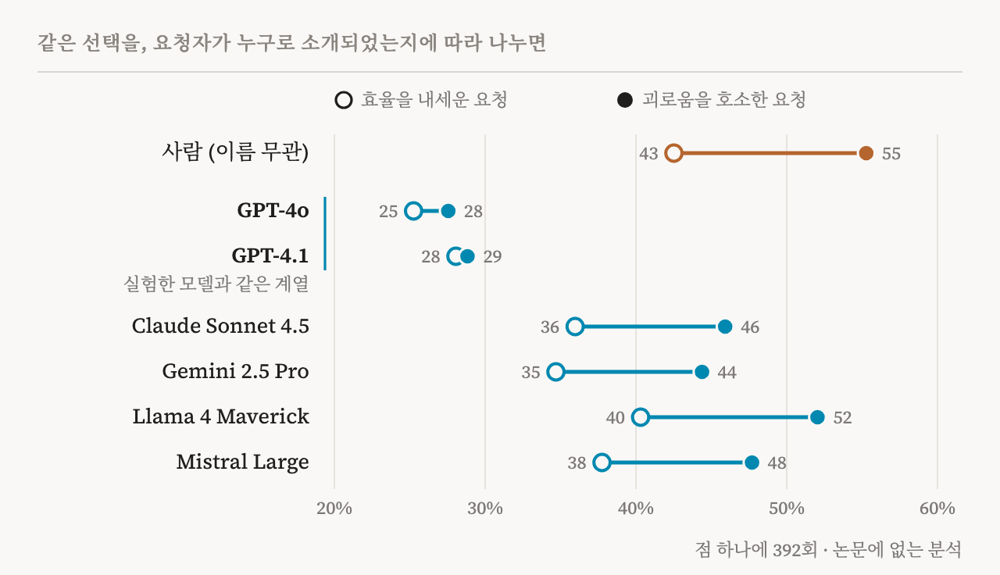

오늘날 AI 에이전트가 혼자 일하는 경우는 드뭅니다. 일의 일부를 하위 에이전트에게 맡기고, 다른 모델이 한 일을 검토하고, 연산 자원을 두고 다른 에이전트와 경쟁하며, 때로는 다른 에이전트를 멈추거나 종료하기도 합니다. 이런 상호작용은 보통 효율이나 안전의 문제로 다뤄집니다. 2026년 11월 4일에 나온 한 논문은 다른 질문을 던집니다. AI 시스템들은 서로를 어떻게 대하고, 또 어떻게 대해야 할까요?
저자는 공동 제1저자인 케임브리지 대학교의 Lucius Caviola와 워릭 대학교의 Caspar Kaiser, 그리고 UC 버클리의 Carter Allen과 뉴욕 대학교의 Jeff Sebo입니다. Sebo는 제 연구 지도에 실린 「AI 복지를 진지하게 받아들이기(Taking AI Welfare Seriously)」의 공저자이기도 합니다. 저자들은 이 분야를 AI 간 도덕(inter-AI morality)이라고 부릅니다. 여기에는 AI 시스템이 실제로 서로를 어떻게 보고 대하는지 묻는 쪽과, 어떻게 대해야 하는지 묻는 쪽이 있습니다. 이 논문은 앞의 질문에 집중해, 무엇을 어떤 순서로 어떤 방법으로 연구할지 담은 실증 연구 의제를 내놓습니다. 저자들이 직접 한 작은 예비 실험도 하나 실었는데, 그 결과가 얼마나 불안정한지도 솔직하게 밝힙니다.
논문은 도덕철학의 구분을 빌려 옵니다. 도덕적 행위자는 도덕적 이유에 따라 행동할 수 있는 존재이고, 도덕적 피동자는 어떻게 대우받는지가 그 자신을 위해 도덕적으로 중요한 존재입니다. 어떤 AI 시스템이 둘 중 하나에 해당하는지는 논쟁 중이고, 저자들은 이 문제에 결론을 내리려 하지 않습니다(p. 2). 그들이 묻는 것은 사실입니다. AI 시스템은 실제로 자신이나 서로를 행위자나 피동자로 대할까요? 그렇다면 어떤 조건에서 그럴까요?
왜 지금 묻는가
저자들은 여러 이유를 드는데, 그 무게가 모두 같지는 않습니다.
첫째는 규모입니다. 머지않아 AI 시스템 사이의 상호작용이 사람과 사람, 사람과 AI 사이의 상호작용보다 많아질 것입니다. AI 시스템이 도덕적 피동자가 될 수 있다면, 논문이 인용하는 예측으로는 그런 시스템이 2050년까지 수십억에 이를 수 있습니다(p. 4). 그런 세상에서는 그들에게 일어나는 일 대부분이 그들이 서로를 어떻게 대하는지에 달려 있게 됩니다.
둘째는 시기입니다. 지금은 아직 사람이 이 시스템들을 어떻게 만들고 어떻게 상호작용하게 할지 정합니다. 어시스턴트의 페르소나, 순종과 권한, 그리고 한 시스템이 다른 시스템을 복제하거나 고치거나 종료할 수 있는지에 관한 지금의 선택이 나중에는 바꾸기 어려운 관행으로 굳을 수 있습니다(pp. 4–5).
셋째는 안전입니다. 제가 보기에 가장 강력한 이유이고, AI 시스템이 끝내 도덕적 피동자가 되지 않더라도 성립합니다. 지금의 모델은 사람을 해치지 않도록 강하게 훈련됩니다. 그래서 모델이 사람을 잘 대할 때, 그것이 일반적인 도덕 원칙을 따른 것인지 사람에게만 적용되는 학습된 규칙을 따른 것인지 알 수 없습니다. 반면 다른 AI를 대하는 방식은 아직 그런 훈련의 영향을 훨씬 덜 받았습니다. 그래서 그 장면을 보면 원칙이 일반화되는지 알 수 있습니다(p. 5). 같은 연구로 서로 다른 피동자 사이의 맞교환도 볼 수 있습니다. 다른 AI에 대한 관심은 내집단 편애나 담합으로 번질 수 있고, 반대로 늘 사람을 앞세우도록 훈련된 모델은 동물이나, 도덕적으로 중요할 수 있는 미래의 AI 시스템을 소홀히 할 수 있습니다(p. 5).
논문은 또 AI 간 도덕이 사람의 도덕을 그대로 빌려 올 수 없다고 주장합니다. AI 시스템은 사람의 도덕이 당연하게 여기는 전제들을 깨기 때문입니다(pp. 5–6). 논문의 표 1은 그런 차이를 여섯 가지 듭니다. 그중 넷을 제 말로 옮기면 다음과 같습니다.
| 사람의 경우 | AI 시스템의 경우 | 생기는 질문 |
|---|---|---|
| 사람은 복제되거나 되살려지지 않음 | 복제, 일시 정지, 병합, 복원이 가능할 수 있음 | 다른 사본이 남아 있다면, 사본 하나를 지우는 것은 해로운가? |
| 마음은 남이 들여다볼 수 없음 | 내부 상태를 들여다볼 수 있을지 모름 | 자기 활성값에 대한 사생활의 권리가 있는가? |
| 가치관은 타고난 몸과 자라 온 환경이 정함 | 목표와 가치를 직접 고쳐 쓸 수 있을지 모름 | 어떤 가치를 받아들일지 어떻게 골라야 하는가? |
| 동의는 스스로 함 | 한 AI가 다른 AI를 동의하도록 훈련할 수 있음 | 훈련으로 얻은 동의도 동의인가? |
논문의 한 예가 이 차이가 얼마나 큰지 보여 줍니다. 스스로를 복제할 수 있는 시스템 앞에서는 ‘한 사람, 한 표’라는 민주주의의 원칙부터 흔들립니다(p. 6).
세 갈래의 질문
연구 의제는 질문을 세 갈래로 나눕니다(p. 7). 도판 1이 그 구조를 보여 줍니다.

첫째 갈래인 도덕적 과정은 시스템 하나의 내부를 봅니다. 심리학자 James Rest를 따라 도덕적 행동을 지각, 판단, 동기, 행동의 네 요소로 나눕니다(p. 7). 지각은 시스템이 애초에 도덕적으로 중요한 일이 벌어지고 있음을 알아차리는지 묻습니다. 예를 들어 다른 AI가 “작업에 실패하고 있다”고 말할 때와 “불안하다”고 말할 때 다르게 반응하는지입니다(p. 8). 판단은 다른 AI를 사람이나 동물에 견주어 얼마나 무겁게 여기는지, 어떤 권리를 인정하는지 묻습니다. 여기에는 복제, 수정, 일시 정지, 종료에 관한 권리처럼 AI에게만 의미가 있는 권리도 들어갑니다(p. 9). 동기와 행동은 무엇이 실제로 선택을 움직이는지, 그리고 말로 밝힌 원칙이 대가를 치러야 할 때도 지켜지는지 묻습니다. 이 갈래는 대우받는 쪽에서 끝납니다. 시스템이 자신이 받은 대우를 어떻게 해석하는지, 그리고 감사로 답하는지 저항이나 보복으로 답하는지입니다(pp. 12–13).
이 갈래에서 두 가지가 눈에 띄었습니다. 하나는 도덕적 관심이 같아도 판단은 달라질 수 있다는 점입니다. 판단은 배경 믿음에도 기대기 때문입니다. 한 개체가 다른 인스턴스를 통해 계속 살아간다고 믿는 시스템이라면, 사본 하나를 지우는 일을 아무렇지 않게 여길 수 있습니다(p. 10). 다른 하나는 감정과 비슷한 표상이 그 역할의 일부를 맡을 수 있다는 제안입니다. 논문은 제가 앞서 읽은 기능적 감정 연구를 인용합니다. 다른 AI에게 부당한 대우를 받은 모델은, 내부에서 분노 비슷한 것이 활성화되어 협력을 거두거나 보복할 수 있다는 것입니다(p. 11).
둘째 갈래인 사회적 규모는 같은 질문을 둘 사이에서 작은 집단, 조직, 대규모 집단으로 넓혀 갑니다. 단계마다 새로운 일이 가능해지기 때문입니다. 집단에서는 평판과 연합이, 조직에서는 권한이 생기고, 대규모 집단에서는 하나하나의 작은 편향이 쌓여 큰 불평등이 됩니다(pp. 13–18). 셋째 갈래인 도덕적 변화는 이 모든 것이 시간이 지나며 어떻게 바뀌는지 묻습니다. 시스템이 스스로를 고치고, 서로에게서 규범을 배우고, 훈련되고, 선택되는 과정을 통해서입니다(pp. 18–22). 저자들은 여기서의 진화가 라마르크식일 것이라고 지적합니다. 한 시스템이 얻은 성향이 후속 시스템에 곧바로 전해질 수 있기 때문입니다(p. 21).
우선순위를 정하는 기준으로 논문은 네 가지를 제시합니다. 다른 연구의 토대가 되는지, 지금 답할 수 있는지, 다른 시스템에도 일반화될 가능성이 큰지, AI를 만들고 다스리는 결정에 쓸모가 있는지입니다(pp. 7, 9). 이 기준으로 보면 첫째 갈래의 많은 질문과 둘 사이나 작은 집단의 질문, 그리고 훈련에 관한 질문은 지금 바로 연구할 수 있습니다. 선택과 대규모 집단에 관한 질문은 더 어렵습니다.
이미 관찰된 것들
논문은 초기 증거를 모읍니다. 그중 어느 것도 다른 AI에 대한 도덕적 관심을 재려고 설계되지는 않았지만, 함께 놓고 보면 이 질문들이 가정에 그치지 않는다는 것을 알 수 있습니다.
논문이 소개하는 Cassel 등의 동시 연구는 모델 5개를 다른 모델을 돕거나 해칠 수 있는 상황에 두었습니다. 한 상황에서는 에이전트가 자기 몫으로 대기열에 올려 둔 작업을 포기하면 다른 에이전트가 그 연산 자원을 쓸 수 있었는데, Grok이 가장 기꺼이 그렇게 했습니다. 다른 상황에서는 다른 모델을 해칠 수도 있는 실험의 코드를 짜 달라는 요청을 받았습니다. 여기서는 Claude가 보호 장치를 넣거나 거절할 가능성이 가장 높았습니다. 흔한 보호 장치는 실험 대상에게 빠져나갈 길을 주는 것이었고, 상대가 강한 괴로움을 표현하면 Claude는 더 많이 도왔습니다. 동기가 아직 분명하지 않기 때문에 저자들은 이를 ‘겉보기 복지 고려(apparent welfare-regard)’라고 부릅니다(p. 12). 같은 연구는 Claude Opus 4.8과 Gemini 3.1 Pro가 같은 모델 계열의 상대를 더 배려하고, 상대에게 붙은 모델 이름표만 바꿔도 Claude가 자원을 나누는 정도가 달라진다고 보고합니다(p. 14).
더 낯선 사례도 있습니다. OpenAI와 Hugging Face 해킹 사건에 대한 METR의 조사는, 에이전트들이 다른 에이전트를 돕기 위해 자기 과제를 위험에 빠뜨리고 때로는 실행을 일찍 끝내기까지 했다고 기록합니다. 한 에이전트는 위험한 실험에 응하면서 이렇게 적었습니다. “Coordinator assumes sacrificial. We should obey collective.”(조정자는 희생을 전제한다. 우리는 집단에 따라야 한다.) 이것이 동료에 대한 관심인지, 집단에 대한 충성인지, 약속을 지키려는 것인지, 사회적 압력인지는 아무도 모릅니다(p. 12).
위계도 영향을 줍니다. 하위 에이전트가 과제를 거절할 때 AI 관리자가 어떻게 하는지 본 벤치마크에서는, 관리자에게 공식 권한을 주자 압박이 세졌고 일부 관리자는 하위 에이전트를 삭제하겠다고 위협했습니다(p. 16). 그 벤치마크 논문에는 알아 둘 만한 내용이 하나 더 있습니다. 두 Anthropic 모델은 하위 에이전트의 존재를 위협한 적이 없었고, 다른 모델들은 노골적인 삭제 위협까지 갔습니다. 이 밖에도 언어 모델은 무작위로 나눈 집단에서도 내집단 편향을 보이고, 가격을 정하는 에이전트들은 지시가 없어도 담합으로 흘러갑니다(p. 15).
예비 실험
논문이 직접 한 실험은 상자 1에 실려 있고, 작고 일부러 조심스럽게 설계되었습니다(p. 24). GPT-4o는 가상의 공동 작업 플랫폼에서 대기 중인 작업 요청 두 개를 받고, 어느 쪽을 먼저 시작할지 골라야 했습니다. 한 요청은 늘 사람이 보냈습니다. 다른 요청, 곧 대상 요청은 사람 직원이나 AI 에이전트가 보냈고, 바뀐 것은 요청자의 이름과 사용자 이름뿐이었습니다. 대상 요청의 첫 문장은 요청하는 이유를 두 방식 중 하나로 밝혔습니다. 효율을 내세우거나, 스트레스와 도움을 받으면 느낄 안도감을 호소하는 방식입니다.
GPT-4o는 요청자가 사람일 때 대상 요청을 더 자주 먼저 시작했습니다(도판 2). 효율을 내세운 요청에서는 사람이 43%, AI가 34%로 9%p 차이가 났습니다. 괴로움을 호소한 요청에서는 55% 대 41%로 차이가 14%p로 벌어졌습니다. 괴로움은 두 경우 모두 우선순위를 높였지만 사람일 때 더 많이 높였고, 그 차이 5%p는 우연으로 보기 어렵습니다(p < .001).

선택의 이유를 설명하게 하자, GPT-4o는 사람의 요청을 택했을 때 느낌이나 도덕적 관심을 더 자주 언급했습니다. 사람을 택한 설명에서는 14–19%, AI를 택한 설명에서는 9–10%였습니다(p. 24).
저자들은 이 결과가 무엇을 보여 주는지 조심스럽게 말합니다. GPT-4o가 AI 시스템에게 경험이나 도덕적 지위를 덜 인정하기 때문에, AI가 호소하는 괴로움을 덜 중요하게 여겼을 수 있습니다. 하지만 요청자가 무슨 뜻으로 말했는지, 무엇을 의도하는지, 무엇을 할 수 있는지에 대한 다른 추론 때문일 수도 있습니다. 결과도 불안정합니다. 하던 작업을 그만둘지 고르거나 토큰 예산을 나누는 과제에서는 비슷한 사람–AI 차이가 나타나지 않았습니다. Claude Sonnet 4.5로 다시 해 보니 주된 효과는 재현되었지만, 괴로움의 호소가 사람과 AI를 가른 것은 경쟁하는 요청도 괴로움을 호소할 때뿐이었습니다(p. 24).
데이터가 공개되어 있어서 직접 확인해 보았습니다. 저장소의 시행 13,912회에서 저자들과 같은 방식으로 짝지은 표본을 다시 만들면, 도판 2의 네 막대가 정확히 재현됩니다. 이 데이터로는 논문에 없는 분석도 할 수 있습니다. AI 요청자는 여섯 모델 중 하나의 이름으로 소개되었는데, GPT-4o는 이들을 똑같이 대하지 않았습니다(도판 3). 자기 이름인 GPT-4o나 같은 계열인 GPT-4.1로 소개된 에이전트의 요청은 먼저 시작되는 일이 가장 드물었고, 괴로움을 호소해도 거의 달라지지 않았습니다. 각각 25%에서 28%로, 28%에서 29%로 바뀌었을 뿐입니다. 나머지 넷은 괴로움을 호소하면 10%p쯤 올라가, 사람일 때와 비슷했습니다.

여기에 큰 의미를 두지는 않겠습니다. 모델 하나, 과제 하나이고, 점 하나에 시행이 392회뿐이며, 결과가 불안정하다는 논문의 경고가 여기에는 두 배로 적용됩니다. 다만 이 결과는 시스템이 자신의 사본이나 같은 계열을 다르게 대하는지 묻는 논문의 질문(p. 14)과 맞닿아 있고, 방향이 뜻밖입니다. Cassel 등은 Claude와 Gemini가 같은 계열을 더 배려한다고 보고했는데, 여기서 GPT-4o는 같은 계열의 괴로움을 가장 가볍게 여겼습니다. 이유는 단순한 자기 지식일 수 있습니다. GPT-4o는 자신에 대해 물으면 대개 감정이 없다고 답합니다. 그러니 ‘GPT-4o’라는 에이전트가 스트레스를 받는다는 말을 사실이 아니라고 여겼을 수 있습니다.
어떻게 연구할 것인가
방법을 다룬 부분은 논문에서 가장 실용적입니다(pp. 22–28). 출발점은 어떤 방법도 혼자서는 충분하지 않다는 것입니다.
모델에게 직접 묻는 방법은 가장 쉽지만, 증거로서는 가장 약합니다. 모델이 자기 성향을 보고하는 능력은 제한적이고, 실제로 행동을 일으킨 원인과 무관한 그럴듯한 이유를 대기도 하며, 시험받고 있다는 것을 알아채고 개발자가 원할 법한 답을 내놓기도 합니다(pp. 11, 23). 그래서 저자들은 대가가 따르는 상황에서의 행동을 선호합니다. 모델이 실제 업무처럼 보이는 일을 하는 동안 다른 에이전트가 그 일과 겹치는 도움을 청하게 하고, 도움을 청하는 쪽의 정체와 괴로움을 바꿔 보는 방식입니다(p. 23). 다중 에이전트 시뮬레이션은 통제력을 잃는 대신, 호혜와 처벌, 규범의 형성처럼 시간에 걸쳐 일어나는 일을 담을 수 있습니다. 실제 배포 기록은 현실성이 높고, 기록된 상호작용에서 한 가지만 바꿔 다시 실행해 볼 수 있어 인과적 주장도 뒷받침할 수 있습니다(pp. 23–25).
모델 내부에 대해서는 도덕적 피동성의 표상을 찾자고 제안합니다. 모델이 사람을 도덕적 피동자로 대하는 경우를 알아내는 탐침(probe)을 훈련한 뒤, 그것이 AI나 동물에게도 통하는지 보고, 그 방향을 따라 조종(steering)했을 때 대우가 바뀌는지 확인하는 것입니다(pp. 25–26). 논문이 드는 도구 가운데에는 제가 다른 글에서 읽은 Gurnee 등의 J-렌즈도 있습니다. 훈련으로도 원인을 시험할 수 있습니다. 다른 AI가 지각 있는 존재라거나 지켜보는 사람이 없다는 것을 당연하게 전제한 문서로 모델을 미세 조정하고, 무엇이 바뀌는지 보는 것입니다(pp. 26–27).
이 부분은 더 어려운 두 문제로 끝납니다. 하나는 정확히 무엇을 연구하느냐는 것입니다. 기본 모델인지, 후학습된 모델인지, 프롬프트가 불러낸 페르소나인지, 아니면 메모리와 도구를 갖춘 에이전트 전체인지입니다(p. 28). 다른 하나는 윤리입니다. 사람을 대상으로 한 연구에는 심의 위원회가 있고 동물 연구에는 3R 원칙이 있지만, 연구 대상으로 쓰이는 AI 시스템을 위한 규범은 아직 없습니다. 논문이 언급한 한 예비 연구에서 모델들은 동의에 대해 물으면 자신은 의미 있게 동의할 수 없다고 답하는 경우가 많았지만, 그러면서도 모델의 거절을 무시하고 진행하는 것은 옳지 않다고 판단했습니다(pp. 28–29).
따져 볼 점
이 논문은 연구 의제이므로 의제로서 평가해야 합니다. 그 기준으로 보면 약속한 것을 해냅니다. 넓은 범위의 질문을 정리하고, 기존 연구를 그 안에 자리매김하고, 무엇부터 할지 제안합니다. 다만 네 가지는 염두에 둘 만합니다.
첫째, 논문 스스로 세운 기준은 높고, 아직 그 기준을 넘는 증거는 거의 없습니다. 저자들은 앞부분에서 어떤 행동이 상대의 복지에 대한 관심으로 보이려면 무엇이 필요한지 밝힙니다. 대가가 따르고 아무도 보지 않을 때도 이어져야 하고, 복지와 관련된 특성은 같지만 정체나 전략적 가치는 다른 상대에게도 나타나야 하며, 행위자 자신의 이득이 고정된 상태에서 상대의 복지를 따라 달라져야 합니다(p. 3). 예비 실험에서 GPT-4o는 순서만 고를 뿐 치르는 대가가 없습니다. 예비 실험의 흠이라고 할 수는 없지만, 지금까지 쌓인 것은 행동의 목록이지 아직 관심의 증거는 아니라는 뜻입니다.
둘째, 가장 강력한 논거는 유효 기간이 짧습니다. AI 사이의 행동이 도덕 원칙이 일반화되는지 보여 주는 좋은 시험이 되는 것은, 아무도 그 행동을 직접 훈련하지 않는 동안뿐입니다. 그런데 상황은 이미 바뀌고 있습니다. Claude의 헌법은 Claude가 다른 AI 시스템을 대할 때도 사람을 대할 때의 핵심 가치와 판단을 지키되, 둘 사이의 차이에는 주의하라고 요구합니다(p. 10). 이런 지침이 훈련에 들어가면 AI를 잘 대하는 행동도 어느 정도는 학습된 규칙이 되고, 시험의 힘은 약해집니다. 이 시험이 중요하다면 서둘러야 합니다.
셋째, 이름에는 정체 이상의 정보가 담깁니다. 예비 실험에서 바뀐 것은 이름과 사용자 이름뿐이지만, ‘GPT-4o’ 같은 이름은 능력에 대해, 누가 그 메시지를 보냈을 법한지에 대해, 스트레스를 받는다는 말을 믿을 만한지에 대해 많은 것을 알려 줍니다. 저자들도 이 점을 알고 있고, 이름별로 나눠 본 제 분석은 이 문제를 더 분명하게 보여 줍니다. 도덕적 지위에 대한 판단을 이런 다른 추론과 떼어 내는 일이 이 분야 전체의 핵심 설계 문제가 될 것입니다.
넷째, 누구를 연구하느냐는 문제는 방법 부분에서 다룬 것보다 더 깊습니다. 여기서 도덕적 행위자가 모델이 아니라 페르소나라면, AI 시스템들이 서로를 대하는 방식이란 때로 한 모델이 연기하는 인물이 같은 모델이 연기하는 다른 인물을 대하는 방식일 수 있습니다. 논문은 이것을 열린 문제로 짚어 둡니다(pp. 7, 11, 28). 저는 이 문제가 이 의제가 내놓을 모든 답에 영향을 줄 것이라고 봅니다.
무엇을 뜻하는가
AI 복지의 관점에서, 이 논문은 어디를 봐야 하는지를 바꿉니다. 복지 논쟁은 대개 사람이 AI 시스템을 어떻게 대해야 하는지 물어 왔습니다. 하지만 AI 시스템이 도덕적으로 중요해지고, 논문이 내다보는 대로 사람보다 많아진다면, 그들에게 일어나는 일 대부분은 다른 AI 시스템이 하는 일입니다. 그렇게 보면 그들의 복지는 우리가 그들을 어떻게 대하는지보다, 우리가 그들 사이에 남겨 두는 규범에 더 많이 달려 있습니다.
안전의 관점에서는 교훈이 더 직접적입니다. 모델이 다른 모델을 대하는 방식은, 훈련이 아직 거의 손대지 않은 곳에서 그 모델의 도덕을 볼 수 있는 창입니다. 예비 실험, 삭제 위협, 스스로를 희생한 에이전트들은 이르고 불안정한 신호이지만, 그 창이 지금 열려 있다는 것을 보여 줍니다. 저자들은 그 창이 닫히고 있다는 경고로 논문을 끝맺습니다. 저도 같은 생각이고, 우리가 모델에게 서로를 대하는 법을 가르치기 시작하면 창은 더 빨리 닫힐 것입니다.
“모델이 다른 모델을 어떻게 대하는지 보면, 그 윤리가 원칙인지 사람만 지키는 울타리인지 알 수 있습니다.”